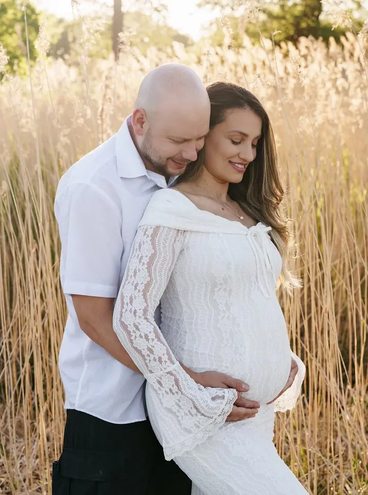
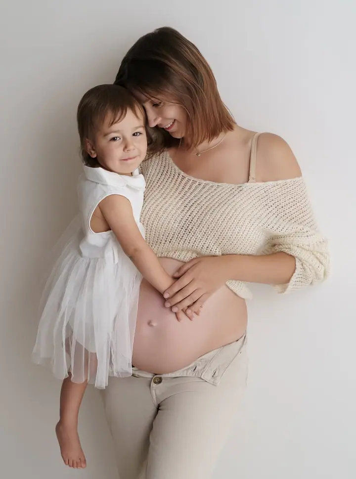
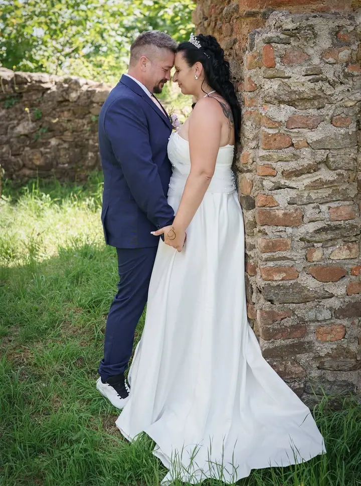

Dámský portrét a boudoir
Jemné focení žen v ateliéru, kde vás napózuji a nasvítím tak, abyste se konečně viděla laskavějšíma očima. Ať jde o portrét, glamour, nebo boudoir, výsledkem má být radost z vlastního odrazu.

Jmenuji se Eva Sobotová a fotím ženy, nastávající maminky i celé rodiny s dětmi v útulném ateliéru v Havlíčkově Brodě a v přírodě na Vysočině. Zakládám si na klidu, přir…
Rezervovat termínK fotografii jsem se dostala vlastně náhodou, nikdy to nebyl můj plán ani velký sen. Začala jsem fotit až po narození dcerky, protože jsem si chtěla uchovat všechny ty malé momenty, které strašně rychle mizí. A nějak se stalo, že mě to pohltilo víc, než jsem čekala.


Jsem stejná jako vy. Jsem máma, takže vím, jak náročné to s dětmi někdy je, a proto na ně při focení nikdy nespěchám. Sama jsem si prošla komplikovaným těhotenstvím a krásná jsem si tehdy nepřipadala. Fotky s bříškem jsem si přesto nechala udělat a dnes patří k těm, ke kterým se s dcerkou nejraději vracíme.
Umím se naladit na různé typy lidí, naslouchám a ráda se u focení směju. Zároveň jsem perfekcionistka a puntičkářka. Zatímco si povídáme, v hlavě řeším vlas sem, ruku tam a světlo o kousek vedle. V běžném životě to není ideální kombinace, ale u focení je to přesně to, co chcete.
Co fotím
Jemné focení žen v ateliéru, kde vás napózuji a nasvítím tak, abyste se konečně viděla laskavějšíma očima. Ať jde o portrét, glamour, nebo boudoir, výsledkem má být radost z vlastního odrazu.
Krásná památka na výjimečné období, v ateliéru nebo v přírodě na Vysočině. Na focení si u mě můžete zapůjčit šaty.
Společné chvíle, emoce i vztahy zachycené přirozeně a s jemným vedením. Pomůžu vám, abyste se před objektivem cítili jistě.
Cake smash k prvním narozeninám, jarní, vánoční i jiné tematické focení. Scénu připravím na míru podle věku, stylu i vašeho přání.
Postup
Napíšete mi přes formulář nebo e-mail, co byste si představovali. Společně vybereme typ focení a termín, který vám vyhovuje.
Každé focení si předem pečlivě naplánuji. Domluvíme se na oblečení, místě a u těhotenského focení i na zápůjčce šatů.
V ateliéru nebo v přírodě vás nenápadně povedu a napózuji. Nikdy nespěchám a vyhradím si pro vás dostatek času, abyste si focení užili.
Z fotografií vyberete ty, které se vám líbí nejvíc. Pečlivě je upravím, a pokud nějaká drobnost zůstane, postarám se o ni při retuši.
Otázky
Určitě. Vím, že focení může být stresující, hlavně poprvé. Poradím vám s pózováním, zvolím úhel i světlo tak, aby výsledek byl co nejlichotivější, a postarám se o uvolněnou atmosféru.
V mém ateliéru v Havlíčkově Brodě na Beckovského ulici, nebo venku v přírodě na Vysočině. Ateliér je otevřený podle objednání.
Ano, na těhotenské focení u mě máte možnost zapůjčení šatů. Vybereme je spolu podle toho, jakou atmosféru chcete.
S tím počítám. Sama jsem máma, takže na děti nikdy nespěchám. Každé dítě potřebuje svůj čas a já se mu přizpůsobím.